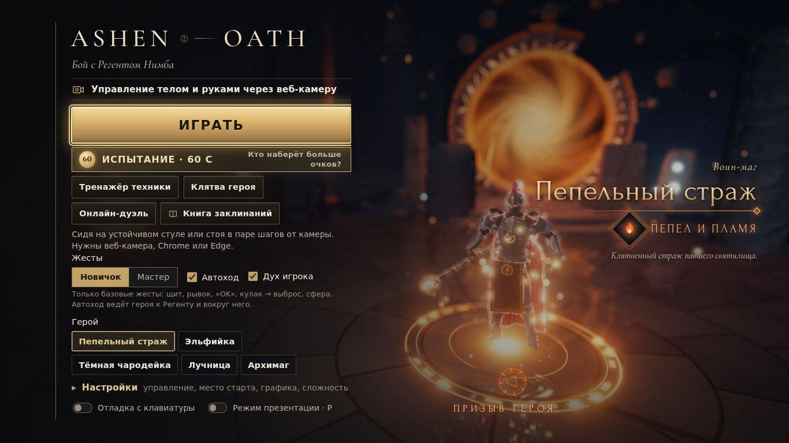
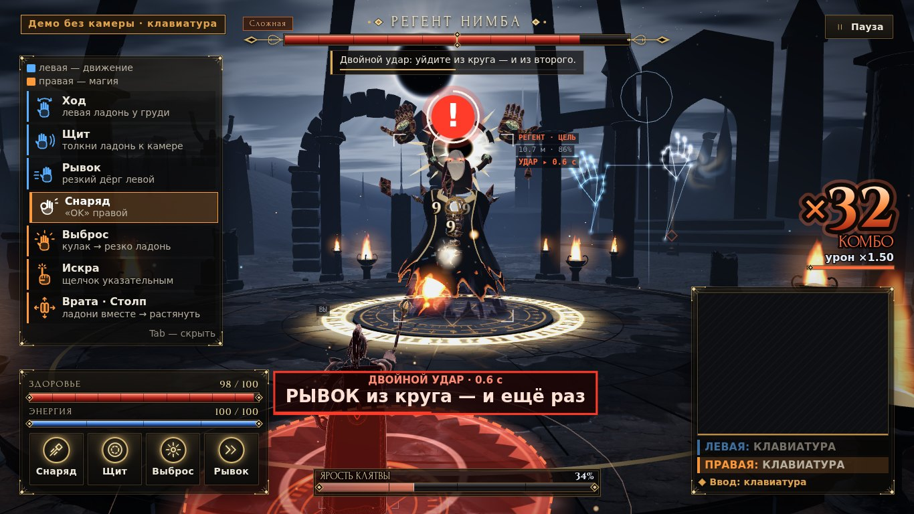
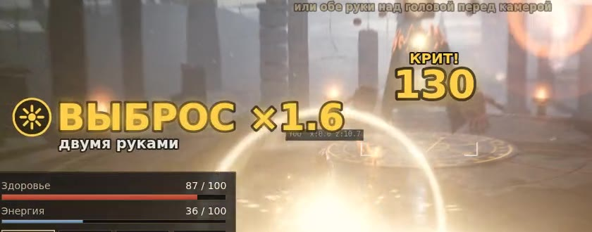
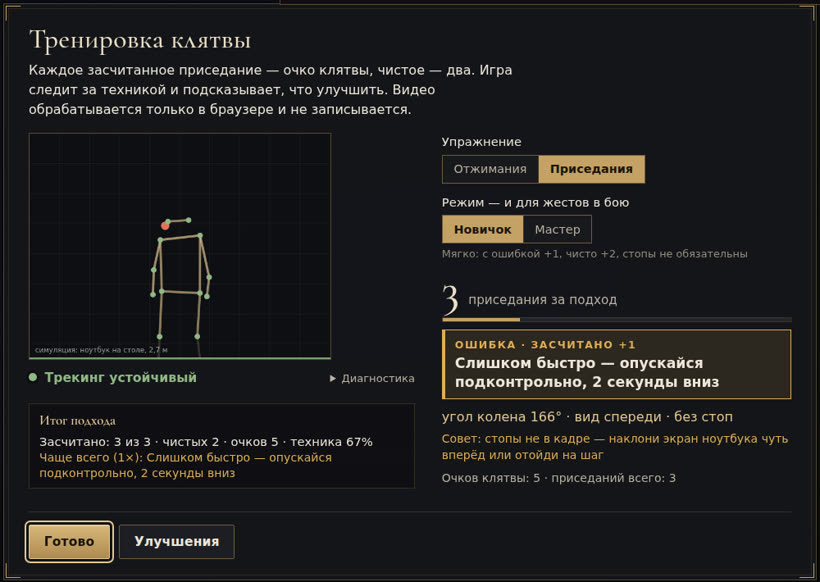
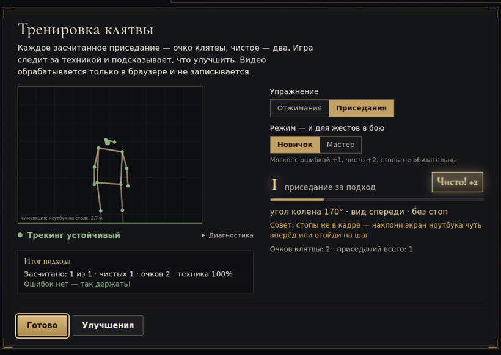
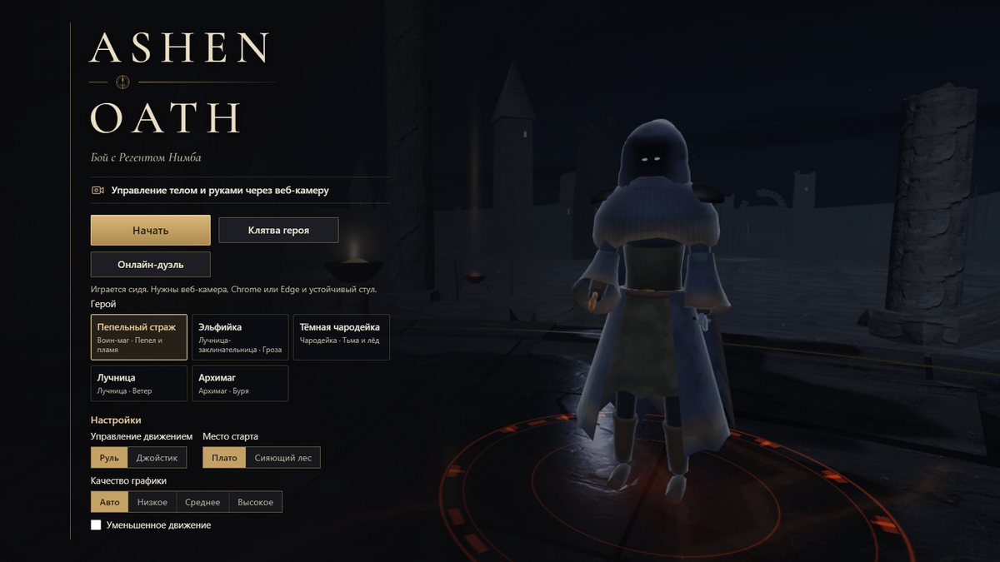
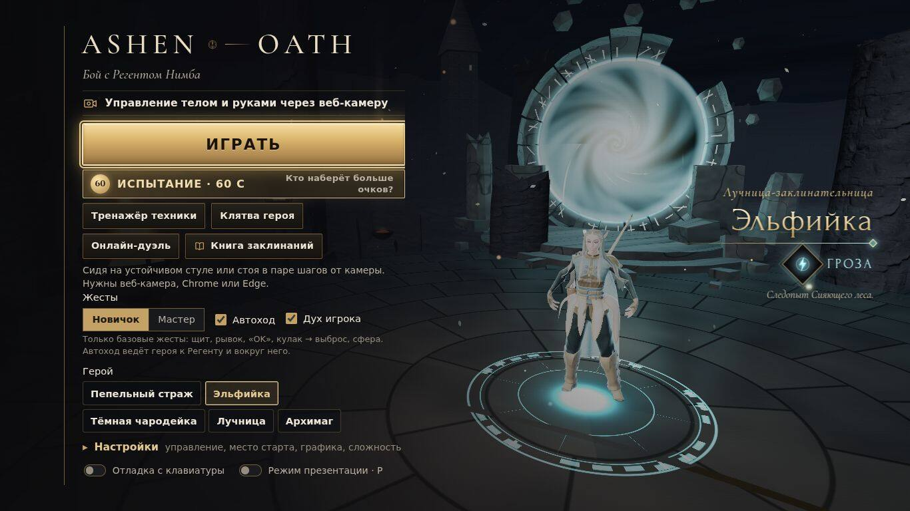
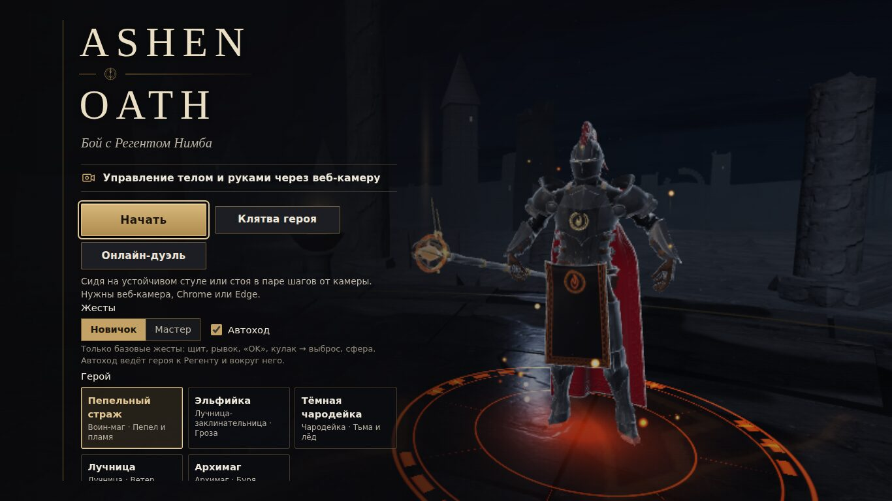

Финал ADMIT · кейс Motion
ASHEN OATHкамера вместо джойстика
Браузерная action-RPG: героем управляют руки и тело через обычную веб-камеру. Без контроллера, установки и датчиков.
- 1Проблема и решение
- 2Как это работает
- 3Что изменилось после отбора
- 4Кому это нужно

Играть: diiaanns07-droid.github.io/ADMIT_STUTU · Chrome или Edge, любая веб-камера ноутбука
01 · Проблема
Игры с движением требуют железа
Двигаться интересно, когда это игра. Но для таких игр обычно нужно отдельное устройство.
Приставки и VR — дорого
Отдельное устройство есть далеко не у каждого школьника и не в каждом классе.
Фитнес-приложения бросают
Повторять упражнения за видео скучно: нет цели, нет игры, нет обратной связи.
Часами сидим за ноутбуком
Учёба и игры — сидя. Движения в течение дня всё меньше.
Веб-камера уже есть в каждом ноутбуке — мы сделали её джойстиком.Ничего не нужно покупать и устанавливать: открыть ссылку и играть.
02 · Решение
Бой с Регентом — руками перед камерой
Тёмное фэнтези в браузере: щит, магия и рывки — жестами, без мыши и клавиатуры.

- Бой с Регентомдве фазы, 4 сложности, ультимейт всем телом
- Испытание · 60 содна минута для всех, ранг S–D, зал славы дня
- Тренажёр техникижест по шагам и подсказка, что не так
- Клятва героянастоящие отжимания и приседания усиливают героя
- Онлайн-дуэльдвое игроков, у каждого своя камера
03 · Как это работает
Как рука становится командой
MediaPipe находит точки кисти и тела. Всё, что дальше, — наш код.
1. Кадр камеры
Обычная веб-камера ноутбука, 640×480. Кадр обрабатывается прямо в браузере и никуда не отправляется.
MediaPipe (Google) даёт 21 точку каждой кисти и 33 точки тела. Наше: распознавание 24 жестов, автоматы состояний, 63 подсказки «ОШИБКА», бой и графика.
04 · Управление
Левая — движение, правая — магия
Как в настоящей игре: одна рука ведёт героя, другая колдует, две вместе — сильные приёмы.
Левая рука
- Ход — ладонь у груди
- Рывок — резкий дёрг левой
- Щит — толчок ладони к камере
Правая рука
- Снаряд — жест «OK»
- Выброс — кулак → резко раскрыть ладонь
- Искра и руны — указательным пальцем
Две руки
- «Врата бури» и «Столп небес» — ладони вместе → растянуть
- «Небесный суд» — обе руки над головой: −28 % здоровья Регента

05 · Твист кейса «ОШИБКА»
Не «не распознано», а «что исправить»
Когда жест не получился, игра говорит голосом и на экране, что именно поправить.
Показал «OK», но кончики пальцев не сомкнулись
Обычно: «жест не распознан»Сомкни кончики большого и указательного в кольцо
06 · Клятва героя
Тренер, который видит технику
Настоящие приседания и отжимания перед камерой дают очки клятвы, а очки — улучшения героя.


+1 и +2повтор с ошибкой — очко и подсказка, чистый — два очка
«Мастер»в строгом режиме засчитываются только чистые повторы
7 улучшенийздоровье, энергия, скорость, урон — за очки клятвы
07 · Технологии и качество
Всё работает в браузере — и проверено
- Видео не уходит в сетьраспознавание — в браузере, в отдельном потоке (Web Worker)
- Работает без интернетавсе библиотеки в репозитории, офлайн-кэш service worker
- Потянет слабый ноутбукавтонастройка качества и запасные режимы распознавания
- three.js, MediaPipe, GitHub Pagesоткрыл ссылку — играешь, ничего не устанавливая
08 · После отбора в финал
Та же игра — другой уровень

30.09 · отбор Сегодня- 3 кнопки → 5 режимов и книга заклинаний
- Героиня на витрине — новые лица, волосы, наряды
- Вход в бой: 6 кликов → 2
Тяните ползунок или нажмите на кадр.
09 · После отбора · 30.09 → 04.10
Доступнее, глубже, красивее, надёжнее
Версия отбора
- бой, базовые жесты
- 3 кнопки в меню
Доступнее
- «Новичок» и автоход
- вход в 2 клика, офлайн
Глубже
- «Врата бури», «Столп небес»
- «Небесный суд», «Испытание · 60 с»
Красивее
- новый Регент и арена
- лица, волосы, наряды героев
Надёжнее
- «Сложная» и «Кошмар»
- камера на слабых ноутбуках
10 · Применение
Кому это нужно и что дальше

Школа
Урок физкультуры или перемена в классе: без установки, офлайн, дуэль по локальной сети.
Дом
Короткая тренировка с контролем техники приседаний и отжиманий — в игре, а не по видео.

Доступность
Можно играть сидя. «Новичок» — базовые жесты и автоход. Мышь не нужна.
11 · Вопросы и ответы
Частые вопросы
01Нужен ли интернет?
Только для первого открытия. Потом игра работает офлайн, а видео с камеры никуда не отправляется.
02Какая камера нужна?
Любая встроенная веб-камера ноутбука. Браузер — Chrome или Edge.
03Что здесь своё, а что от Google?
MediaPipe даёт точки кисти и тела. Распознавание 24 жестов, автоматы, подсказки «ОШИБКА», бой и графика — наш код.
04Потянет ли слабый ноутбук?
Да: качество графики подстраивается само, а распознавание переходит на запасной режим, если видеокарта не успевает.
05Можно без камеры?
Да: в меню включите «Отладка с клавиатуры» — все приёмы на клавишах.
06Что дальше?
Казахский язык, режим учителя для класса и пилот в школе.
Любой ноутбук с камерой — игра, тренер и урок движения.
Отсканируйте QR или откройте diiaanns07-droid.github.io/ADMIT_STUTU
three.js · MediaPipe (Google) · three-vrm (pixiv) · PeerJS · Quaternius · KayKit · VRoid · Poly Haven · шрифт Inter (OFL). Звук и мир — свои.